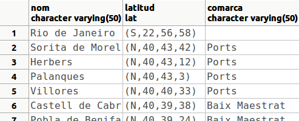
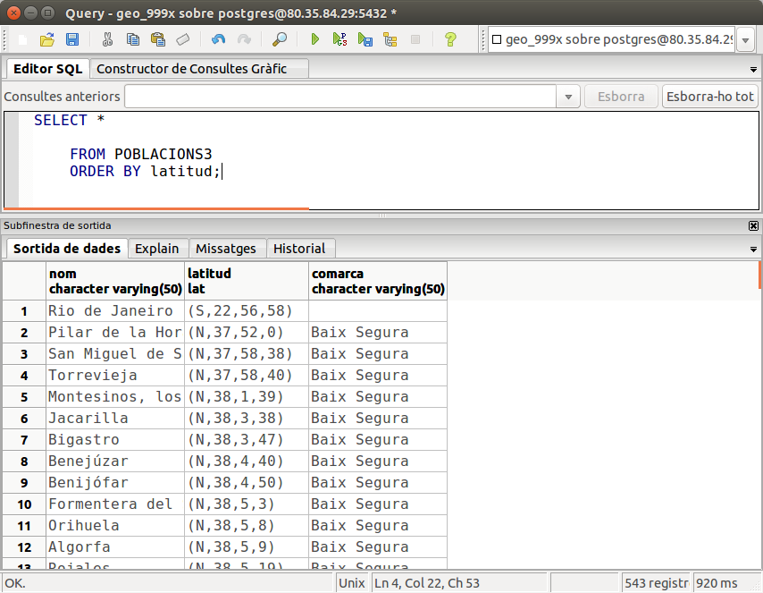

9.2 Operadors de classe
Hem fet els operadors de comparació per a un nou tipus de dades que hem creat, però a pesar d'això, no podem ordenar per un camp d'aquest tipus, és a dir, consultes com la següent encara no funcionen:
SELECT *
FROM POBLACIONS3
ORDER BY latitud DESC;observeu com la primera és Rio de Janeiro, quan havia de ser l'última.

Ens falta un pas més, construir un OPERADOR DE CLASSE (OPERATOR CLASS), que permetrà indexar per un camp d'aquest tipus. Això suposarà que podrem ordenar de forma ascendent o descendent, i que podrem crear índex formats per camps d'aquest tipus; fins i tot podrà ser, a partir d'aquest moment, clau principal.
Una vegada tenim tots els operadors de comparació, només ens resta crear una funció de suport a l'operador i definir pròpiament l'operador de classe.
Nota
Abans de continuar, estigueu segurs que teniu tots els operadors creats, incloent < i <=
La funció de suport ha de tenir dos paràmetres del tipus que volem, i tornar -1, 1 o 0, depenent de si el primer operand és menor, major o igual que el segon, respectivament.
CREATE OR REPLACE FUNCTION lat_cmp(lat1 lat,lat2 lat) RETURNS integer AS $cos$
BEGIN
IF lat1 < lat2 THEN return -1;
ELSEIF lat1 > lat2 THEN return 1;
ELSE return 0;
END IF;
END;
$cos$ LANGUAGE 'plpgsql';Ara ja podem definir l'operador de classe. Haurem de tenir privilegis d'administració (per evitar que qualsevol usuari puga crear operadors de classe). Haurem d'especificar:
- El tipus de dades per a qui definim l'operador de classe.
- El mètode d'indexació que utilitzarem (normalment btree, b-arbre)
- L'estratègia d'ordenació, especificant quins són els nostres operadors i associant-los a números.
- També haurem d'especificar la funció de suport.
Lamentablement no teniu privilegis d'administració, per tant aquesta part no la podreu fer, únicament us podreu fiar. La definició de l'operador de classe quedarà així :
FOR TYPE lat USING btree AS
OPERATOR 1 <,
OPERATOR 2 <=,
OPERATOR 3 =,
OPERATOR 4 >=,
OPERATOR 5 >,
FUNCTION 1 lat_cmp(lat, lat);
Si esteu molt molt interessats i voleu comprovar-lo, m'ho dieu a mi i us crearé aquest operador de classe.
Ara ja ens funcionaria la següent sentència:
SELECT *
FROM POBLACIONS3
ORDER BY latitud DESC;observeu com estem ordenant de forma ascendent, i la primera és Rio de Janeiro:

I fins i tot, si fóra el cas, podríem definir el camp latitud com a clau principal, que no és el cas perquè ja és nom.
Llicenciat sota la Llicència Creative Commons Reconeixement NoComercial CompartirIgual 3.0